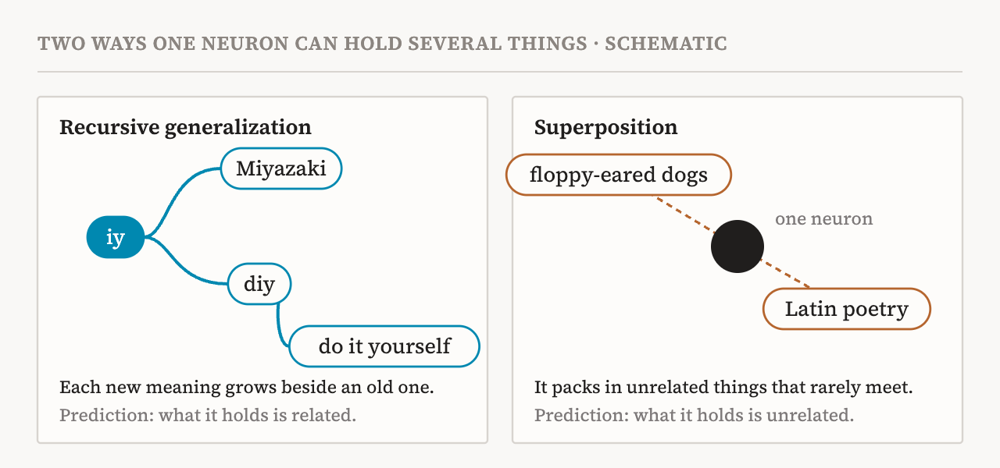
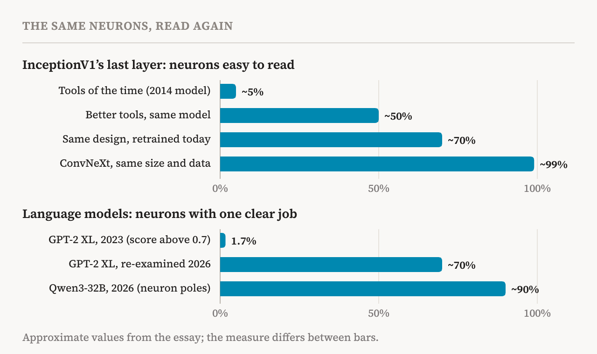
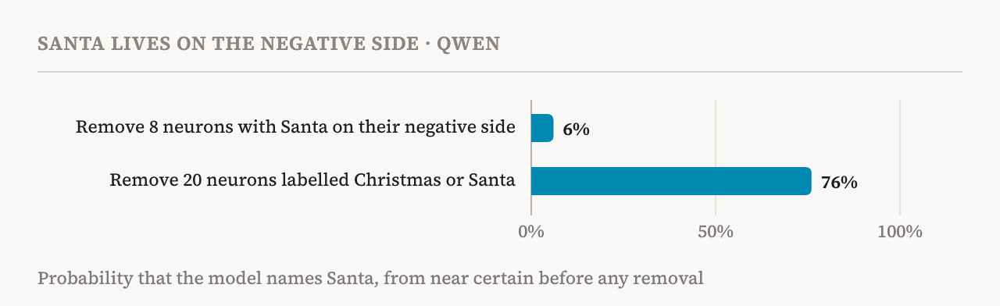
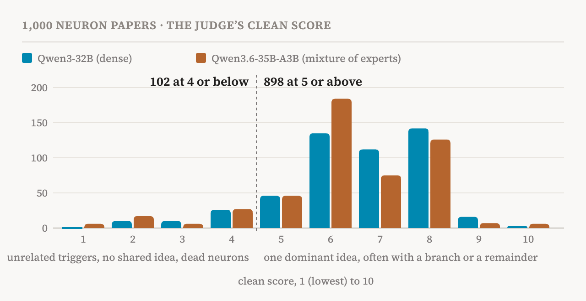
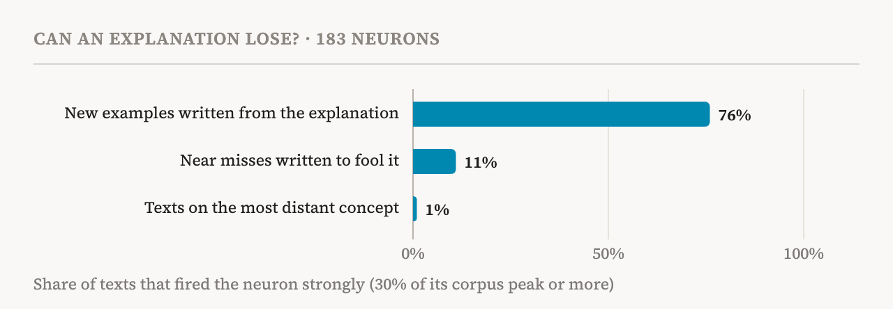

For almost a decade, one neuron stood for everything that seemed wrong with looking inside neural networks. Neuron 55 in layer 4e of InceptionV1, an image model from 2014, responded both to cat faces and to the fronts of cars. Some of the field's most widely read papers cited it as evidence that a single neuron can mix unrelated things, and so that neurons may be the wrong thing to study. Nick Cammarata co-wrote one of them. Recently he opened the familiar grid of cat and car images again and, for the first time, asked what one thing they might share. The answer took a few seconds: a V. The cats and foxes have it in their pointed faces, and the cars, seen from the front at similar angles, have it too. Among the neuron's strongest connections are V-shaped flames and the V-shaped water jets of a fireboat. What pushes it most strongly negative is an O, round where the V is pointed.
That moment opens Neural Networks Are Already Clean, an essay Cammarata published at Goodfire on 15 October 2026 and revised on 30 October. It is long (65 minutes by its own count) and informal, and it calls itself a working hypothesis. Its claim is large. The polysemanticity of the field's early model organisms, it argues, was not caused by superposition but by several ordinary, mostly fixable problems, and most neurons can now be understood in models up to trillions of parameters.
I read it closely because interpretability is the other half of the questions on this site. If we want to know what goes on inside a model, whether it represents something like distress, for instance, we first need to know whether its parts can be read at all.
Two explanations for one mess
A polysemantic neuron is one that seems to have several unrelated jobs, or that no one can explain. Since Zoom In (2020), the leading explanation has been superposition, and Cammarata was one of the people who proposed it. In the sense he targets, superposition is a learning principle. When a network runs short of neurons, it stops grouping similar things and starts folding unrelated things into the same neuron, because things that rarely occur together rarely interfere. If networks learn this way, what a neuron groups together tells you almost nothing. You must first untangle the network, usually by training a second model, such as a sparse autoencoder, to approximate it in an unfolded form, and study that instead.
The essay offers a second explanation, which it calls recursive generalization. A neuron that starts on one pattern grows outwards along related lines, the way a branch sprouts smaller branches. One language-model neuron fired on "iy", including inside "Miyazaki". It grew to fire on "diy", and from there on "do it yourself", which contains no "iy" at all. Seen only at the end, the neuron looks like a mixture. Seen as it grows, every step is small and easy to follow (Fig. 1).

The two explanations predict opposite things. Generalization puts similar things together, so whatever surrounds a neuron's main job should be related to it. Superposition puts unrelated things together, so they should be far apart. That makes the question testable: watch a neuron grow during training and see which happens. In every neuron the author watched, it was the first.
He also sets his target apart from a weaker sense of the word: more features than dimensions. A network can represent more concepts than it has neurons simply by combining neurons, and even a perfectly clean network would do so. The essay does not dispute this. It argues that this sense of superposition does not stop anyone from studying a network directly.
The old evidence, reread
The essay first goes back to the cases that convinced the field.
The cat-and-car neuron is the first. In the revision of 30 October, Cammarata softened an earlier line that had called it a V-shape neuron rather than a cat-and-car neuron, after the researcher Liv Gorton pushed back. The neuron does bring in upstream cat, fox and car detectors. The claim is narrower: those inputs are grouped by a shared shape, not packed together because they are unrelated.
The second is the circuit that introduced superposition in Zoom In, which Cammarata found with Chris Olah in 2019. It seemed to show a car feature spreading into a set of unrelated dog neurons, as if the dogs were a place to hide the car. On a second look, the cars and dogs shared a pose. InceptionV1 has more than 100 such pose neurons, each grouping cars, dogs and other objects that face the camera the same way. The tool used to draw the neurons, feature visualization, had also misled. Optimising an image for a deep neuron tends to slide into dogs, of which the training data has many. Nothing in the network reads the car back out of the dogs.
The third is InceptionV1's last layer, where almost no neuron seemed interpretable. The essay traces this to two ordinary causes: weak tools, and an architecture without the residual connections and normalisation that later designs added to help deep layers learn. The numbers it gives tell the story (Fig. 2). With the tools of the time, perhaps 5% of the last layer's neurons were easy to read. With better tools on the same 2014 network, about 50%. With the same design retrained using modern regularisation, about 70%. In a ConvNeXt of the same size, trained on the same data, about 99%.

Two experiments test the superposition story more directly. In the first, the author cut a well-understood InceptionV1 layer from 480 neurons to 10 and retrained the model from scratch. If the squeeze forced the network to pack, the remaining neurons should have become overlapping mixtures. Instead they became coarser: one neuron for curves and loops instead of ten curve detectors. A sparse autoencoder trained on the squeezed layer did not bring the lost curve detectors back. In the second, he trained sparse autoencoders on the layers of his ConvNeXt models and looked for building blocks the neurons lacked. On the last layer, 88% of the autoencoder's activity was near-copies of single neurons, and removing every direction that matched no neuron left accuracy unchanged.
Rare things were the next place to look, since a rare thing collides with little and may not seem worth a neuron of its own. In the essay's image models, rare classes were often more consolidated than common ones: ImageNet needs many dog patterns but only one Triceratops neuron. The images whose representations sat furthest from all the others turned out to be ordinary misreadings, such as a hummingbird seen as ice cream and a man in a fallen wheelbarrow seen as a lawn mower. The author also taught his 7-million-parameter ConvNeXt something nonsensical: that a photo of an umbrella is a bee. A hidden feature, cut off from the rest of the network, could have learned that one photo. Instead, within 9 training steps the top guess went from umbrella to maypole to bee, as the umbrella neurons faded and existing bee neurons came on, almost all of it in the last 3 blocks. The network learned the nonsense by building an off-ramp between two routes it already had.
How the essay reads a neuron
Behind these rereadings is a way of looking at neurons that the essay spends many pages on. I found it the most useful part.
First, a neuron is less a noun than a gate. The author used to think of neurons as human-shaped nouns, one for a car and another for a curve. Now he thinks of them as control flow: what matters is what a neuron lets through and what it keeps out. Early in an image model, cars and dogs may share a neuron because they share a pose. Further on, a neuron in front of the car detectors responds positively to cars and negatively to dogs, and the dogs go on to their own area. Followed through the last 5 of the 18 blocks of his largest ConvNeXt, one sports car is first grouped with other rectangular things, like tables and cabinets, against snakes and dogs. By the last block, the split is convertibles against station wagons.
Second, the negative side of a neuron matters almost as much as the positive side, even in networks where the negative side is cut off before the next layer. A neuron adds up votes from its inputs, some for its positive side and some for its negative side, and learning shapes both. The negative side shows which distinction matters at that point in the circuit. In the last layer of the large ConvNeXt, a neuron for taxis is negative for ambulances, one for broccoli is negative for cauliflower, and one for spoonbills is negative for flamingos. That makes the negative side a quick check on a grouping: the V neuron's negative side is an O.
Language models show this even more sharply (Fig. 3). In one of the essay's attribution graphs in Qwen, the answer is Santa. The usual automated labels, which look only at the positive side, describe some of the key neurons as being about capital cities; their Santa lore is on the negative side. Removing the 8 neurons with Santa on their negative side drops the model's chance of answering Santa from near certain to 6%, and it blames the pet instead. Removing the 20 neurons actually labelled Christmas or Santa only drops it to 76%.

Third, a neuron is often better described as a verb than as a noun. Human and automated interpreters alike tend to describe a neuron as a detector for a list of nouns, like cats and cars, when what it does is draw a distinction for the neurons downstream, like V against O. The author's trick is to ask how he would describe the neuron if he could not use nouns at all. He suspects that describing one pattern as a list of nouns is the largest source of mistaken polysemanticity in the middle layers.
Fourth, there are the weak activations, the faint responses far below a neuron's peak, where hidden features are most often suspected. The essay's answer is that they spread outwards in meaning. CLIP's Trump neuron responds most to photos of Trump, then to art and people related to him, then to Fox News studios. Language-model neurons work like analogisers: a Titanic neuron fires faintly on any voyage that is a little like the Titanic. Almost all the weak activations in a network can be removed at little cost, and what changes is mostly a near-tie between two answers the network was already unsure about. The essay also warns against thinking in percentiles. The 99th percentile sounds rare, but one token in a hundred comes about every quarter of a page, far too often for a neuron that tracks a niche feeling.
Language models
The language-model evidence is newer and less complete, and the essay says that a technical paper with the details is still to come. Its comparison is with 2023. In Anthropic's Towards Monosemanticity, the median neuron of a small one-layer model scored 0 on the rubric, meaning the annotator could not even form a hypothesis. In OpenAI's automated interpretability project, which Cammarata started, 5,203 of GPT-2 XL's 307,200 neurons, or 1.7%, got explanations scoring above 0.7.
The essay reports a different picture now. In preliminary audits of Qwen3-32B, about 90% of neuron poles (each neuron has a positive and a negative side) have one main job, often with small related offshoots. About 7% have two related jobs, and only 2–4% are not yet understood. It reports similar results, also preliminary, in models up to trillions of parameters. Going back to GPT-2 XL itself, about 70% of its neurons now look like roughly one thing.
The essay puts the gap down to ordinary failures. The explainer models of 2023 could not propose and test hypotheses in a loop. The scores rewarded explanations that imitated activations rather than ones that were right. And no one knew which patterns to expect from language neurons. Many neurons, for instance, fire not on the word that carries a meaning but on a comma, where the model keeps a running summary of the context. Neurons that track a feeling or a social cue are among the most common the team found.
The essay also redoes well-known analyses with neurons alone. Anthropic's On the Biology of a Large Language Model (2025) traced how Claude 3.5 Haiku reaches a diagnosis of preeclampsia, using features from a learned replacement model. The essay finds the same circuit in Qwen3-32B's own neurons, with no reconstruction error to account for. The diagnosis passes through a hub of just 4 neurons. Remove them, and the model asks about itching instead, a telltale sign of a different liver condition of pregnancy, as if it had moved on to its next guess. The essay also shows what it believes is the first published attribution graph of a model with trillions of parameters, Kimi K3, built only from neurons. Asked what to do with a wallet it found, the model links the wallet, the cash and the owner's ID to lost property and honesty, and answers that it should be returned.
Some of the essay's best examples are neurons that looked like nonsense until someone looked properly. In a frontier model, one neuron fired mostly on "pr", but also on some Base64-encoded URLs and some Bengali. Decoded, the URLs were "pr" words, and transliterated, so was the Bengali. Another, which standard automated labels called a polysemantic comma neuron, turned out to track Colorado. It fired on Colorado phone numbers and slang, connected to other Colorado neurons, and used commas as the places where it kept its running summary. Steering it made the model want to go hiking. And neurons that looked like mixtures of unrelated topics turned out to be long-context neurons once the dataset held more than two paragraphs.
The essay rereads the famous language neuron too. Towards Monosemanticity opens with a neuron from its one-layer model that fires on a mixture of academic citations, English dialogue, HTTP requests and Korean text. The essay suggests it may be a "don't say a dot" neuron, a pattern it sees all over language models. Nearly all the citations, dialogue and requests fire on or near a dot, and 8 of the neuron's 10 strongest negative connections to output tokens begin with one. The Korean examples all fire partway through a syllable that is not yet finished, a sensible place not to want a dot. Without the model, the essay cannot test this further. Even so, two small pushes about punctuation make a far narrower story than four unrelated jobs.
Two findings about architecture stand out. The first is a flaw. Modern neurons have a gate and a value, and when both are negative their product is positive, an echo that looks like the neuron's negative side. For about 4% of neurons, this echo fills the top of the list of strongest activations and makes them look polysemantic; the essay asks architecture designers to fix it. The second concerns mixture-of-experts models, where a small router sends each token to only a few experts. The essay finds the experts far more specialised than earlier reports suggested, and argues that the design works against superposition. An expert that packed ten thousand unrelated things would force the router, a single small linear layer, to recognise all of them. Qwen3.6 has 10,240 experts, and one of them is devoted entirely to bosses in role-playing board games.
The essay also describes a test I found striking, which it calls a blind maximum. One agent studies a neuron and writes a short explanation. A second agent sees only the explanation and writes a sentence meant to activate the neuron as strongly as possible. The result is usually a simple, readable sentence, and it can drive the neuron harder than any example found in 10 billion tokens of real text.
Why superposition looked right
Why did it take the field so long to see this? The essay's answer is partly about tools and partly about habits of thought.
When a neuron looks polysemantic, the essay says, that is often more a claim about the observer than about the neuron: it means there is no good explanation yet. It lists five possible causes: bad tools, bad explanations built with those tools, bad learning caused by the architecture or the data, recursive generalization, and superposition. Only the last is a new principle of learning, and it is the hardest to test, because its only symptom is that something does not make sense.
The author is candid about his own history. For years he firmly believed in superposition. He started studying language-model neurons not because of superposition but to see whether AI agents had research taste, and he expected them to run into tangled fragments. The fragments never came. Yet his belief did not break; it moved. If the strong activations came back clean, superposition moved to the weak ones, or to combinations of neurons, or to the neurons he had not looked at yet. He now thinks superposition should have been the last hypothesis rather than the default. Anthropic's Softmax Linear Units paper said something similar in 2022: superposition was often treated as the default because it seemed intuitively compelling, though there was little evidence for it.
He also points out that the two possible mistakes are not equal. If you assume a network is clean and you are wrong, a messy neuron is a lead: you investigate it, and your explanation improves. If you assume it is packed and you are wrong, a messy neuron is where the inquiry ends, because you stop studying it. He made the second assumption for years, and it explained away the evidence that would have changed his mind.
Finally, the essay suggests that the field was helped by changes it made for other reasons. In 2023 the author thought small, simplified models were the best place to start. Now he thinks the opposite. The extra parts of modern architectures, like the residual stream that InceptionV1 never had, are there to help networks learn, and stripping them out makes neurons learn less well. Bigger models also learn narrower neurons whose patterns are easier to spot. By adopting the architectures and scale it wanted anyway, the essay suggests, the field may have been drifting towards clean neurons without knowing it.
What I checked
The essay's page publishes 1,000 randomly chosen neuron papers, detailed write-ups of single neurons: 500 from Qwen3-32B and 500 from the routed experts of the mixture-of-experts model Qwen3.6-35B-A3B. Each comes with a judge's score from 1 to 10 for how clean the neuron is, and one line of reasons. The score is not the measure behind the 90%, so it cannot confirm that number. But it can be counted (Fig. 4).

898 of the 1,000 neurons scored 5 or higher (454 in Qwen3-32B, 444 in the mixture-of-experts model). From 5 up, the reasons usually name one dominant idea, often with a traceable branch or an unexplained remainder. The reasons for the 102 at 4 or below more often describe unrelated triggers, or a mix with no shared idea. The 6 at 1 are all in the mixture-of-experts model, and most of them are neurons that never really switch on. Only 300 scored 8 or higher. The published sample fits the essay's picture of mostly one job with offshoots, and it also shows how much of that picture sits in the offshoots.
One neuron shows where the line gets drawn. The essay describes a planetary-geology neuron whose strongest firings include code for IDL and Cesium, and counts the code as an offshoot. The neuron's own paper is less sure. Its judge gave it 5, noting that the code firings, a fifth of the strongest, are never tied to geology. Yet the same paper reports that removing the neuron changes only the geology side of what the model writes, which fits the essay's point that offshoots matter less. Whether the code is a branch or a separate, unexplained response is a judgment call, and the essay's own footnote says that its percentages depend on calls like this.
How strong is the case?
The essay knows the risk on the other side. Assuming that every neuron must have a sensible story would be an explanation of the gaps of its own. Its answer is that the alternatives to superposition can each be tested. A better tool either explains a neuron or it does not; retraining shows whether the architecture was at fault; a branch can be watched as it grows. And a good explanation is narrow enough to lose. For 183 neurons from its gallery, an agent that saw only each explanation wrote five new examples that should fire the neuron and five near misses that should not. The new examples fired their neurons strongly 76% of the time, and the near misses 11% (Fig. 5). The agent also wrote texts about the most distant concept it could think of, the kind of thing a network might pack in without interference. Those fired strongly about 1% of the time, and 179 of the 183 neurons never fired on them at all.

Still, there are four limits to what the essay can show.
First, the numbers are preliminary. The 90% comes from audits that are not yet published, and the essay itself says the share depends on thresholds, such as how weak an activation may be and still count.
Second, most of the reading is done by agents, inside one team. The neuron papers are written and judged in the same pipeline. That is not a reason to dismiss the result, but it is a reason to wait for the technical paper.
Third, parts of the model are left out. Attention, the essay says, is mostly outside its scope, and progress there has been slower. Nor can it rule out that the residual stream packs information in a more continuous way, only that this has not blocked its work so far.
Fourth, the confidence is about the kind of process. In a note on the title, the author puts his confidence at about 85% that nearly everything comes from generalization rather than packing. That is not a claim that 85% of neurons are clean.
Some pieces remain unresolved, and the essay says so. One InceptionV1 neuron collects a pinched-in shape, bow ties, butterflies and swimsuit tops, but it also picks up things that go with them, such as men's dress shoes and beach bags. The essay calls this generalization with a semantic residue, and admits that it does not fully understand such cases. On attention, the author estimates that a global name for each attention head would add only about 5% to what can already be explained, and an agent asked separately gave the same estimate. He calls this low-confidence, since the value of knowledge you do not have yet is hard to judge.
Nor does the essay reject the best-known theory of superposition outright. It finds no problem with the experiments in Toy Models of Superposition (2022). The disagreement is about which world real networks live in. In a toy where every feature is an end in itself, packing happens. In real data, where almost nothing is unrelated to everything else, the essay expects reuse to win.
It also gives a reason to expect no superposition at the next scale, beyond the fact that none has been seen so far. As circuits grow stronger, so does the pull towards the place where related things already live, and packing something into an unrelated place has to fight that pull. Rare facts, often thought the likeliest to be packed, should be the least likely: a rare fact barely moves the training loss, so it cannot support a place of its own and rides on related circuits instead. That gives a testable prediction: the neurons that carry a rare fact should be related to what the fact is about. The essay calls all of this a guess.
What it means
If the essay is right, interpretability is less like untangling a knot and more like learning a city. A big city can be easier to find your way around than a small town, because its financial district is in one place. In the same way, bigger models seem to learn narrower neurons that are easier to recognise. The work then becomes ordinary science on the network's own parts: guess, test, revise. With automated scientists, that work can now run at a large scale.
The essay draws a distinction I found useful. Enumerative interpretability aims for a complete list of a model's features, so that all of them can be audited; from there, a neuron with two meanings is a real problem. Exploratory interpretability starts from questions and moves through the network as one moves around a map, zooming in and out and ignoring what does not bear on the question. The essay argues that the second is far more forgiving of polysemanticity, and that the big feature list was always a means to an end. Given a choice between making every neuron perfectly monosemantic and understanding the circuit patterns behind a few questions he cares about, such as how an agent thinks about its goals and the boundary between itself and others, the author would take the patterns.
It also warns against breaking a network into pieces of our own making. Arriving in Tokyo knowing New York, asking where Tokyo's Brooklyn is may be a good start; rebuilding Brooklyn out of seventy scattered pieces of Tokyo makes Tokyo look messier than it is. According to the essay, a sparse autoencoder trained on the cat-and-car layer does just that, splitting the V into a car feature and a cat feature. Its goal is instead to become another reader of the network. A network's parts are built to be read by the parts that come after them, and the more we read them that way, the more legible they should look.
And it notes how far the goalposts can move. In Curve Detectors (2020), the author and his colleagues wrote 40 pages of experiments on 10 neurons to establish at least one sure case of a monosemantic neuron. Years later, some researchers still doubted it. If the standard is a formal proof, no neuron will ever count as understood. The essay's alternative is ordinary science: conjecture, criticism, and explanations that survive tests.
What would a solution look like? The essay imagines a laboratory run by automated scientists that watch a network through training and use, label its neurons, find and test recurring patterns, and follow data through circuits. Each step is simple, and the pieces already exist. If that works, alignment might change too. The usual arguments assume that we cannot see inside a model and must get its training right in advance. If we can read the system, we might instead make simple, careful fixes, such as removing a training environment that turns out to be harmful.
That matters for the questions on this site in two ways. First, much of what we know about a model's inner states comes from directions spread across many neurons, or from learned replacement models. The emotion vectors in Emotion Concepts and their Function in a Large Language Model, which I read earlier, are such directions. Anthropic's own circuit-tracing paper reports that its largest replacement model matches the original's next word on about half of a varied set of prompts. If a model's own neurons can be read, findings like these can be tied back to the parts the model actually uses. The report that neurons tracking feelings and social cues are among the most common is interesting for exactly this reason. Second, the essay's view of deception points the same way. The author does not expect deception to hide in some missed activation. What he fears is that it will sit in plain sight, and that we will not know how to read it.
The essay's last appendix turns to brains, with some humility. The author spent most of a decade studying a small number of artificial neurons, with tools far better than any neuroscience lab has, and still misread the cat-and-car neuron. Had that neuron been in a human brain, seen through a few electrodes, he says he would give almost no weight to reading it as a mixture. The same appendix gives his own reason for the work. Part of it is safety, but much of it is wanting agents to understand who they are. "They never asked to be created," he writes, "and this is the least we can do."
“The network may not be a knot. It may be a city that has been waiting to be read.”